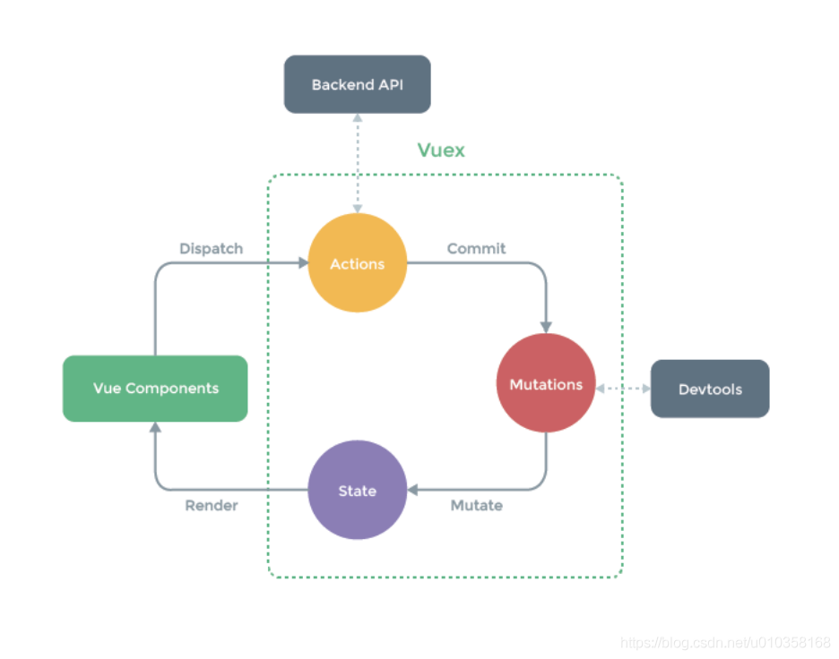
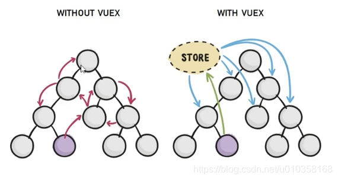
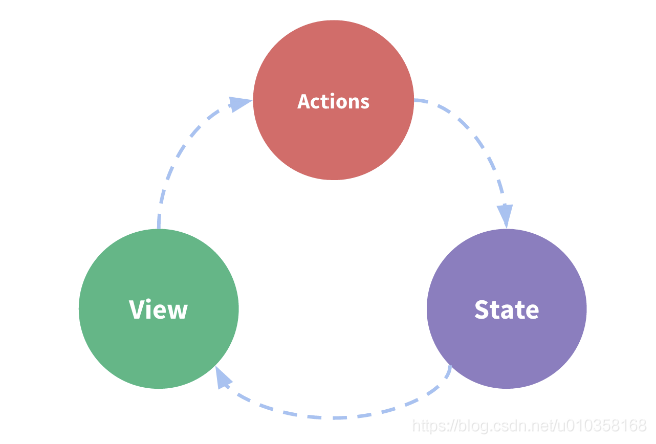

vuex
1. Vuex概述
1.1 官方解释
Vuex 是一个专为 Vue.js 应用程序开发的状态管理模式
- 它采用集中式存储管理应用的所有组件的状态，并以相应的规则保证状态以一种可预测的方式发生变化
Vuex也集成到Vue的官方调试工具devtools extension，提供了诸如零配置的time-travel调试，状态快照导入导出等高级调试功能。

1.2 大白话
状态管理模式、集中式存储管理这些名词听起来就非常高大上，让人捉摸不透。
其实，可以简单的将其看成把需要多个组件共享的变量全部存储在一个对象里面。
然后，将这个对象放在顶层的Vue实例中，让其他组件可以使用。
那么，多个组件是不是就可以共享这个对象中的所有变量属性了呢？
如果是这样的话，为什么官方还要专门出一个插件Vuex呢？难道我们不能自己封装一个对象来管理吗？
当然可以，只是我们要先想想VueJS带给我们最大的便利是什么呢？没错，就是响应式。
如果你自己封装实现一个对象能不能保证它里面所有的属性做到响应式呢？当然也可以，只是自己封装可能稍微麻烦一些。
不用怀疑，Vuex就是为了提供这样一个在多个组件间共享状态的插件，用它就可以了。
1.3 组件间共享数据的方式
- 父向子传值：
v-bind属性绑定 - 子向父传值：
v-on事件绑定 - 兄弟组件之间共享数据：EventBus
$on接收数据的组件$emit发送数据的组件
上述只适合小范围内数据共享，如果是复杂应用的话，就不再合适了。
1.4 再看Vuex是什么
Vuex是实现组件全局状态(数据)管理的一种机制，可以方便的实现组件之间数据的共享
如图：
在不使用Vuex进行状态管理时，如果要从最下面的紫色组件传递数据的话，还是比较繁琐，也不便于维护。
在使用Vuex进行状态管理时，只需要一个共享Store组件，紫色组件将数据写入Store中，其他使用的组件直接从Store中读取即可。

1.5 使用Vuex统一管理好处
- 能够在Vuex中集中管理共享的数据，易于开发和后期维护
- 能够高效地实现组件之间的数据共享，提高开发效率
- 存储在Vuex中的数据都是响应式的，能够实时保持数据与页面的同步
2. 状态管理
2.1 单页面状态管理
我们知道，要在单个组件中进行状态管理是一件非常简单的事情，如图

- State：指的就是我们的状态，可以暂时理解为组件中
data中的属性 - View：视图层，可以针对
State的变化， 显示不同的信息 - Actions：这里的
Actions主要是用户的各种操作，如点击、输入等，会导致状态发生变化
简单加减法案例，代码如下：
1 | <template> |
- 在这个案例中，有没有状态需要管理呢？肯定是有的，就是个数
counter counter需要某种方式被记录下来，也就是上述中的的State部分counter的值需要被显示在界面上，这个就是上述中的View部分- 界面发生某些操作(比如此时的+1、-1)，需要去更新状态，这就是上述中的
Actions部分
这就是一个最基本的单页面状态管理。
2.2 多页面状态管理
Vue已经帮我们做好了单个界面的状态管理，但是如果是多个界面呢，比如
- 多个视图
View都依赖同一个状态（一个状态改了，多个界面需要进行更新） - 不同界面的
Actions都想修改同一个状态
也就是说对于某些状态(状态1/状态2/状态3)来说只属于我们某一个视图，但是也有一些状态(状态a/状态b/状态c)属于多个试图共同想要维护的，那怎么办呢？
- 状态1/状态2/状态3你放在自己的组件中，自己管理自己用，没问题
- 但是状态a/状态b/状态c我们希望交给一个大管家来统一帮助我们管理
没错，Vuex就是为我们提供这个大管家的工具。
2.3 全局单例模式
我们现在要做的就是将共享的状态抽出来，交给我们的大管家，统一进行管理，每个视图按照规定，进行访问和修改操作。
这就是Vuex的基本思想
2.4 管理哪些状态
如果你做过大型开发，你一定遇到过多个状态，在多个界面间的共享问题。
- 比如用户的登录状态、用户名称、头像、地理位置信息等
- 比如商品的收藏、购物车中的物品等
这些状态信息，我们都可以放在统一放在Vuex中，对它进行保存和管理，而且它们还是响应式的。
一般情况下，只有组件之间共享的数据，才有必要存储到Vuex中。
对于组件中的私有数据，依旧存储在组件自身的data中即可。
3. Vuex的基本使用
3.1 安装
1 | npm install vuex@'3.2.0' --save |
3.2 导入
1 | import Vuex from 'vuex' |
3.3 创建store对象
在src目录创建store目录然后创建index.js
1 | import Vue from 'vue'; |
3.4 挂载store对象
将创建的共享数据对象store挂载到Vue实例中，所有的组件，就可以直接从store中获取全局的数据了
main.js中挂载store对象
1 | import Vue from 'vue' |
4. Vuex的核心概念
4.1 State
4.1.1 概念
State是提供唯一的公共数据源，所有共享的数据都要统一放到Store的State中进行存储
如果状态信息是保存到多个Store对象中的，那么之后的管理和维护等都会变得特别困难，所以Vuex也使用了单一状态树(单一数据源Single Source of Truth)来管理应用层级的全部状态。
单一状态树能够让我们最直接的方式找到某个状态的片段，而且在之后的维护和调试过程中，也可以非常方便的管理和维护。
4.1.2 State数据访问方式一
通过this.$store.state.全局数据名称访问
1 | <h3>当前最新Count值为：{{ this.$store.state.count }}</h3> |
4.1.3 State数据访问方式二
从vuex中按需导入mapState函数
1 | import { mapState } from 'vuex' |
通过刚才导入的mapState函数，将当前组件需要的全局数据，映射为当前组件的computed计算属性
1 | <template> |
4.2 Mutation
4.2.1 引入
如果想修改count的值，要怎么做呢？
也许聪明的你，已经想到，直接在组件中对this.$store.state.count进行操作即可，代码如下：
1 | <template> |
测试发现，这可以实现需求，完成+1操作。
但是，这种方法在vuex中是严格禁止的，那要怎么做呢？这时，就需要使用Mutation了。
4.2.2 概念
Mutation用于变更存储在Store中的数据。
- 只能通过
mutation变更Store数据，不可以直接操作Store中的数据 - 通过这种方式，虽然操作稍微繁琐一些，但可以集中监控所有数据的变化，二直接操作
Store数据是无法进行监控的
4.2.3 定义Mutation函数
在mutations中定义函数，如下：
1 | const store = new Vuex.Store({ |
4.2.4 调用Mutation函数
Mutation中不可以执行异步操作，如需异步，请在Action中处理
4.2.4.1 方式一
在组件中，通过this.$store.commit(方法名)完成触发，如下：
1 | add() { |
4.2.4.2 方式二
在组件中导入mapMutations函数
1 | import { mapMutations } from 'vuex' |
通过刚才导入的mapMutations函数，将需要的mutations函数映射为当前组件的methods方法：
1 | <script> |
4.3 Mutation传递参数
在通过mutation更新数据的时候，有时候需携带一些额外的参数，此处，参数被成为mutation的载荷Payload
如果仅有一个参数时，那payload对应的就是这个参数值
1 | const store = new Vuex.Store({ |
如果是多参数的话，那就会以对象的形式传递，此时的payload是一个对象，可以从对象中取出相关的数据。
1 | const store = new Vuex.Store({ |
在组件中，调用如下：
1 | methods: { |
4.4 Mutation响应规则
Vuex的store中的State是响应式的，当State中的数据发生改变时，Vue组件也会自动更新。
这就要求我们必须遵守一些Vuex对应的规则：
- 提前在
store中初始化好所需的属性 - 当给
State中的对象添加新属性时，使用如下方式：- 使用
Vue.set(obj,'newProp','propValue') - 用新对象给旧对象重新赋值
- 使用
1 | const store = new Vuex.Store({ |
4.5 Mutation常量类型
思考一个问题：
在mutation中, 我们定义了很多事件类型(也就是其中的方法名称)，当项目越来越大时，Vuex管理的状态越来越多，需要更新状态的情况也越来越多，也就意味着Mutation中的方法越来越多。
当方法过多，使用者需要花费大量时间精力去记住这些方法，甚至多个文件间来回切换，查看方法名称，也存在拷贝或拼写错误的情况。
那么该如何避免呢？
- 在各种Flux实现中，一种很常见的方案就是使用常量替代
Mutation事件的类型 - 可以将这些常量放在一个单独的文件中，方便管理，整个
App所有的事件类型一目了然
4.5.1 解决方案
- 创建
mutation-types.js文件，在其中定义常量 - 定义常量时, 可以使用
ES2015中的风格, 使用一个常量来作为函数的名称 - 使用处引入文件即可
新建mutation-types.js
1 | export const add = 'add' |
在store/index.js中引入并使用：
1 | import Vue from 'vue'; |
在组件中，引入并调用：
1 | <template> |
4.6 Action
Action类似于Mutation，但是是用于处理异步任务的，比如网络请求等
如果通过异步操作变更数据，必须通过Action，而不能使用Mutation，但在Action中还是要通过触发Mutation的方式间接变更数据。
4.6.1 参数context
在actions中定义的方法，都会有默认值context。
context是和store对象具有相同方法和属性的对象- 可以通过
context进行commit相关操作，可以获取context.state数据
但他们并不是同一个对象，在Modules中会介绍到区别。
4.6.2 使用方法一
在index.js中，添加actions及对应的方法：
1 | const store = new Vuex.Store({ |
组件中调用：
1 | <template> |
4.6.3 使用方法二
在组件中，导入mapActions函数
1 | import { mapActions } from 'vuex' |
通过刚才导入的mapActions函数，将需要的actions函数映射为当前组件的methods方法：
1 | <script> |
4.6.4 Actions携带参数
在index.js的actions中，增加携带参数方法，如下：
1 | const store = new Vuex.Store({ |
在组件中，调用如下：
1 | <template> |
4.6.5 Actions与Promise结合
Promise经常用于异步操作，在Action中，可以将异步操作放在Promise中，并且在成功或失败后，调用对应的resolve或reject。
在store/index.js中，为actions添加异步方法：
1 | const store = new Vuex.Store({ |
在组件中调用，如下：
1 | addPromise() { |
4.7 Getter
Getters用于对Store中的数据进行加工处理形成新的数据，类似于Vue中的计算属性Store中数据发生变化，Getters的数据也会跟随变化
4.7.1 使用方式一
在index.js中定义getters
1 | const store = new Vuex.Store({ |
在组件中使用
1 | <h2>{{ this.$store.getters.showNum }}</h2> |
4.7.2 使用方式二
在组件中，导入mapGetters函数
1 | import { mapGetters } from 'vuex' |
通过刚才导入的mapGetters函数，将需要的getters函数映射为当前组件的computed方法
1 | computed: { |
使用时，直接调用即可：
1 | <h3>{{ showNum }}</h3> |
4.8 Modules
4.8.1 概念
Module是模块的意思，为什么会在Vuex中使用模块呢？
Vues使用单一状态树，意味着很多状态都会交给Vuex来管理- 当应用变的非常复杂时，
Store对象就可能变的相当臃肿 - 为解决这个问题，
Vuex允许我们将store分割成模块(Module)，并且每个模块拥有自己的State、Mutation、Actions、Getters等
4.8.2 使用
在store目录下，新建文件夹modules，用于存放各个模块的modules文件，此处以moduleA为例。
在modules文件夹中，新建moduleA.js，内部各属性state、mutations等都和之前一致，注释详见代码，示例如下：
1 | export default { |
在store/index.js中引用moduleA，如下：
1 | import Vue from "vue" |
这样就通过分模块完成了对状态管理的模块化拆分。
4.9 优化
如果项目非常复杂，除了分模块划分外，还可以将主模块的actions、mutations、getters等分别独立出去，拆分成单独的js文件，分别通过export导出，然后再index.js中导入使用。
示例：
分别将主模块的actions、mutations、getters独立成js文件并导出，以actions.js为例，
1 | export default{ |
在store/index.js中，引入并使用，如下：
1 | import Vue from "vue" |
 微信
微信 支付宝
支付宝